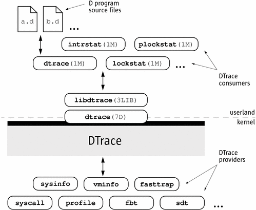

Previous
Previous
Introduction
Welcome to Dynamic Tracing in the Solaris Operating System! If you have ever wanted to understand the behavior of your system, DTrace is the tool for you. DTrace is a comprehensive dynamic tracing facility that is built into Solaris that can be used by administrators and developers on live production systems to examine the behavior of both user programs and of the operating system itself. DTrace enables you to explore your system to understand how it works, track down performance problems across many layers of software, or locate the cause of aberrant behavior. As you'll see, DTrace lets you create your own custom programs to dynamically instrument the system and provide immediate, concise answers to arbitrary questions you can formulate using the DTrace D programming language. The first section of this chapter provides a quick introduction to DTrace and shows you how to write your very first D program. The rest of the chapter introduces the complete set of rules for programming in D as well as tips and techniques for performing in-depth analysis of your system. You can share your DTrace experiences and scripts with the rest of the DTrace community on the web at http://www.sun.com/bigadmin/content/dtrace/. All of the example scripts presented in this guide can be found on your Solaris system in the directory /usr/demo/dtrace.
Getting Started
DTrace helps you understand a software system by enabling you to dynamically modify the operating system kernel and user processes to record additional data that you specify at locations of interest, called probes. A probe is a location or activity to which DTrace can bind a request to perform a set of actions, like recording a stack trace, a timestamp, or the argument to a function. Probes are like programmable sensors scattered all over your Solaris system in interesting places. If you want to figure out what's going on, you use DTrace to program the appropriate sensors to record the information that is of interest to you. Then, as each probe fires, DTrace gathers the data from your probes and reports it back to you. If you don't specify any actions for a probe, DTrace will just take note of each time the probe fires.
Every probe in DTrace has two names: a unique integer ID and a human-readable string name. We're going to start learning DTrace by building some very simple requests using the probe named BEGIN, which fires once each time you start a new tracing request. You can use the dtrace(1M) utility's -n option to enable a probe using its string name. Type the following command:
# dtrace -n BEGIN
After a brief pause, you will see DTrace tell you that one probe was enabled and you will see a line of output indicating that the BEGIN probe fired. Once you see this output, dtrace remains paused waiting for other probes to fire. Since you haven't enabled any other probes and BEGIN only fires once, press Control-C in your shell to exit dtrace and return to your shell prompt:
# dtrace -n BEGIN dtrace: description 'BEGIN' matched 1 probe CPU ID FUNCTION:NAME 0 1 :BEGIN ^C #
The output tells you that the probe named BEGIN fired once and both its name and integer ID, 1, are printed. Notice that by default, the integer name of the CPU on which this probe fired is displayed. In this example, the CPU column indicates that the dtrace command was executing on CPU 0 when the probe fired.
You can construct DTrace requests using arbitrary numbers of probes and actions. Let's create a simple request using two probes by adding the END probe to the previous example command. The END probe fires once when tracing is completed. Type the following command, and then again press Control-C in your shell after you see the line of output for the BEGIN probe:
# dtrace -n BEGIN -n END dtrace: description 'BEGIN' matched 1 probe dtrace: description 'END' matched 1 probe CPU ID FUNCTION:NAME 0 1 :BEGIN ^C 0 2 :END #
As you can see, pressing Control-C to exit dtrace triggers the END probe. dtrace reports this probe firing before exiting.
Now that you understand a little bit about naming and enabling probes, you're ready to write the DTrace version of everyone's first program, “Hello, World.” In addition to constructing DTrace experiments on the command line, you can also write them in text files using the D programming language. In a text editor, create a new file called hello.d and type in your first D program:
Example 1-1 hello.d: Hello, World from the D Programming LanguageBEGIN
{
trace("hello, world");
exit(0);
}After you have saved your program, you can run it using the dtrace -s option. Type the following command:
# dtrace -s hello.d dtrace: script 'hello.d' matched 1 probe CPU ID FUNCTION:NAME 0 1 :BEGIN hello, world #
As you can see, dtrace printed the same output as before followed by the text “hello, world”. Unlike the previous example, you did not have to wait and press Control-C, either. These changes were the result of the actions you specified for your BEGIN probe in hello.d. Let's explore the structure of your D program in more detail in order to understand what happened.
Each D program consists of a series of clauses, each clause describing one or more probes to enable, and an optional set of actions to perform when the probe fires. The actions are listed as a series of statements enclosed in braces { } following the probe name. Each statement ends with a semicolon (;). Your first statement uses the function trace() to indicate that DTrace should record the specified argument, the string “hello, world”, when the BEGIN probe fires, and then print it out. The second statement uses the function exit() to indicate that DTrace should cease tracing and exit the dtrace command. DTrace provides a set of useful functions like trace() and exit() for you to call in your D programs. To call a function, you specify its name followed by a parenthesized list of arguments. The complete set of D functions is described in Chapter 10, Actions and Subroutines.
By now, if you're familiar with the C programming language, you've probably realized from the name and our examples that DTrace's D programming language is very similar to C. Indeed, D is derived from a large subset of C combined with a special set of functions and variables to help make tracing easy. You'll learn more about these features in subsequent chapters. If you've written a C program before, you will be able to immediately transfer most of your knowledge to building tracing programs in D. If you've never written a C program before, learning D is still very easy. You will understand all of the syntax by the end of this chapter. But first, let's take a step back from language rules and learn more about how DTrace works, and then we'll return to learning how to build more interesting D programs.
Providers and Probes
In the preceding examples, you learned to use two simple probes named BEGIN and END. But where did these probes come from? DTrace probes come from a set of kernel modules called providers, each of which performs a particular kind of instrumentation to create probes. When you use DTrace, each provider is given an opportunity to publish the probes it can provide to the DTrace framework. You can then enable and bind your tracing actions to any of the probes that have been published. To list all of the available probes on your system, type the command:
# dtrace -l ID PROVIDER MODULE FUNCTION NAME 1 dtrace BEGIN 2 dtrace END 3 dtrace ERROR 4 lockstat genunix mutex_enter adaptive-acquire 5 lockstat genunix mutex_enter adaptive-block 6 lockstat genunix mutex_enter adaptive-spin 7 lockstat genunix mutex_exit adaptive-release ... many lines of output omitted ... #
It might take some time to display all of the output. To count up all your probes, you can type the command:
# dtrace -l | wc -l
30122You might observe a different total on your machine, as the number of probes varies depending on your operating platform and the software you have installed. As you can see, there are a very large number of probes available to you so you can peer into every previously dark corner of the system. In fact, even this output isn't the complete list because, as you'll see later, some providers offer the ability to create new probes on-the-fly based on your tracing requests, making the actual number of DTrace probes virtually unlimited.
Now look back at the output from dtrace -l in your terminal window. Notice that each probe has the two names we mentioned earlier, an integer ID and a human-readable name. The human readable name is composed of four parts, shown as separate columns in the dtrace output. The four parts of a probe name are:
Provider | The name of the DTrace provider that is publishing this probe. The provider name typically corresponds to the name of the DTrace kernel module that performs the instrumentation to enable the probe. |
Module | If this probe corresponds to a specific program location, the name of the module in which the probe is located. This name is either the name of a kernel module or the name of a user library. |
Function | If this probe corresponds to a specific program location, the name of the program function in which the probe is located. |
Name | The final component of the probe name is a name that gives you some idea of the probe's semantic meaning, such as BEGIN or END. |
When writing out the full human-readable name of a probe, write all four parts of the name separated by colons like this:
provider:module:function:name
Notice that some of the probes in the list do not have a module and function, such as the BEGIN and END probes used earlier. Some probes leave these two fields blank because these probes do not correspond to any specific instrumented program function or location. Instead, these probes refer to a more abstract concept like the idea of the end of your tracing request. A probe that has a module and function as part of its name is known as an anchored probe, and one that does not is known as unanchored.
By convention, if you do not specify all of the fields of a probe name, then DTrace matches your request to all of the probes that have matching values in the parts of the name that you do specify. In other words, when you used the probe name BEGIN earlier, you were actually telling DTrace to match any probe whose name field is BEGIN, regardless of the value of the provider, module, and function fields. As it happens, there is only one probe matching that description, so the result is the same. But you now know that the true name of the BEGIN probe is dtrace:::BEGIN, which indicates that this probe is provided by the DTrace framework itself and is not anchored to any function. Therefore, the hello.d program could have been written as follows and would produce the same result:
dtrace:::BEGIN
{
trace("hello, world");
exit(0);
}Now that you understand where probes originate from and how they are named, we're going to learn a little more about what happens when you enable probes and ask DTrace to do something, and then we'll return to our whirlwind tour of D.
Compilation and Instrumentation
When you write traditional programs in Solaris, you use a compiler to convert your program from source code into object code that you can execute. When you use the dtrace command you are invoking the compiler for the D language used earlier to write the hello.d program. Once your program is compiled, it is sent into the operating system kernel for execution by DTrace. There the probes that are named in your program are enabled and the corresponding provider performs whatever instrumentation is needed to activate them.
All of the instrumentation in DTrace is completely dynamic: probes are enabled discretely only when you are using them. No instrumented code is present for inactive probes, so your system does not experience any kind of performance degradation when you are not using DTrace. Once your experiment is complete and the dtrace command exits, all of the probes you used are automatically disabled and their instrumentation is removed, returning your system to its exact original state. No effective difference exists between a system where DTrace is not active and one where the DTrace software is not installed.
The instrumentation for each probe is performed dynamically on the live running operating system or on user processes you select. The system is not quiesced or paused in any way, and instrumentation code is added only for the probes that you enable. As a result, the probe effect of using DTrace is limited to exactly what you ask DTrace to do: no extraneous data is traced, no one big “tracing switch” is turned on in the system, and all of the DTrace instrumentation is designed to be as efficient as possible. These features enable you to use DTrace in production to solve real problems in real time.
The DTrace framework also provides support for an arbitrary number of virtual clients. You can run as many simultaneous DTrace experiments and commands as you like, limited only by your system's memory capacity, and the commands all operate independently using the same underlying instrumentation. This same capability also permits any number of distinct users on the system to take advantage of DTrace simultaneously: developers, administrators, and service personnel can all work together or on distinct problems on the same system using DTrace without interfering with one another.
Unlike programs written in C and C++ and similar to programs written in the Java programming language, DTrace D programs are compiled into a safe intermediate form that is used for execution when your probes fire. This intermediate form is validated for safety when your program is first examined by the DTrace kernel software. The DTrace execution environment also handles any run-time errors that might occur during your D program's execution, including dividing by zero, dereferencing invalid memory, and so on, and reports them to you. As a result, you can never construct an unsafe program that would cause DTrace to inadvertently damage the Solaris kernel or one of the processes running on your system. These safety features allow you to use DTrace in a production environment without worrying about crashing or corrupting your system. If you make a programming mistake, DTrace will report your error to you, disable your instrumentation, and you can correct your mistake and try again. The DTrace error reporting and debugging features are described later in this book.
The following diagram shows the different components of the DTrace architecture, including providers, probes, the DTrace kernel software, and the dtrace command.
Figure 1-1 Overview of the DTrace Architecture and ComponentsNow that you understand how DTrace works, let's return to the tour of the D programming language and start writing some more interesting programs.